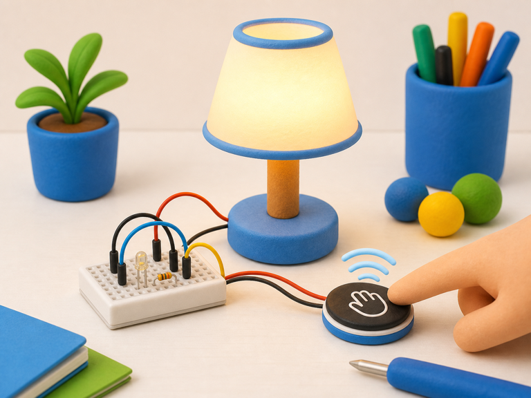
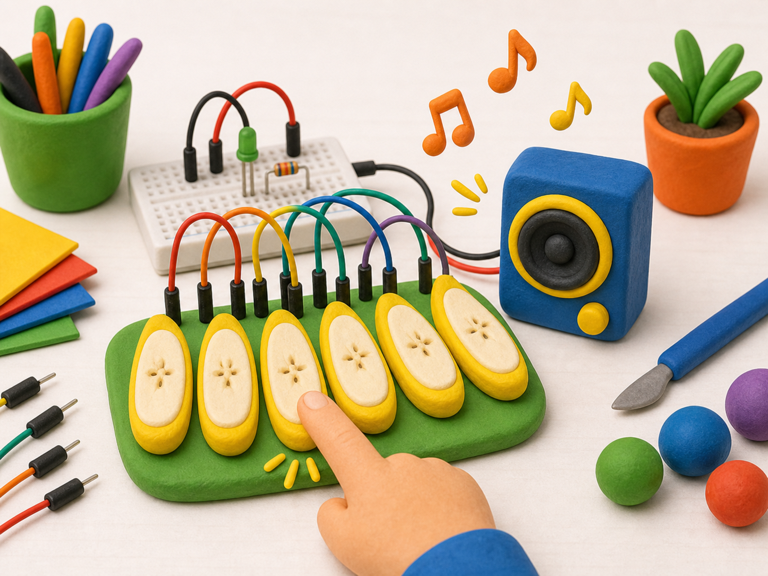

Touch lamp switch
DetectFinger touches pad
→
DecideLamp should change
→
DoToggle light
A capacitive touch sensor lets your project detect a gentle finger touch.
It senses a tiny change in electricity around its touch pad, a bit like the screen on a phone or tablet.
Your projects can use touch to make hidden buttons, magic switches, musical pads, or secret controls.


from gpiozero import DigitalInputDevice
touch = DigitalInputDevice(
17,
pull_up=False
)
touched = touch.is_activefrom picozero import TouchSensor
touch = TouchSensor(2)
touched = touch.is_touchedtouch.is_active on Raspberry Pi or touch.is_touched on Pico when your project needs to react to touch.